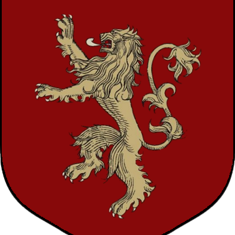

|
House Lannister of Casterly Rock is one of the Great Houses of Westeros, one of its richest and most powerful families and oldest dynasties. It is also the current royal house of the Seven Kingdoms following the extinction of House Baratheon of King's Landing, which had been their puppet house anyway TThe Lannisters rule over the Westerlands. Their seat is Casterly Rock, a massive rocky promontory overlooking the Sunset Sea which has had habitations and fortifications built into it over the millennia. They are the Lords Paramount of the Westerlands and Wardens of the West. As the new royal house, they also rule directly over the Crownlands from their seat of the Red Keep in King's Landing, the traditional seat of the royal family. House Lannister's Heraldry consists of a golden lion on a crimson background, and their House words are "Hear me roar!", which is rarely mentioned. Their unofficial motto, which is as well known as the official one, is "A Lannister always pays his debts" - which is used much more often and mostly in negative context, though it can also be used in the original, literal sense. The incestuous relationship of Cersei and Jaime has been concealed in a conspiracy. Their son Joffrey Baratheon has claimed the Iron Throne on the premise that he was actually fathered by the late King Robert Baratheon. Lord Tywin was a key supporter of his reign in the War of the Five Kings. |

|